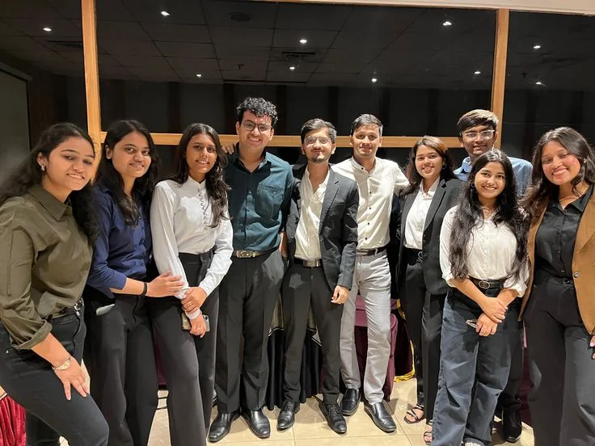
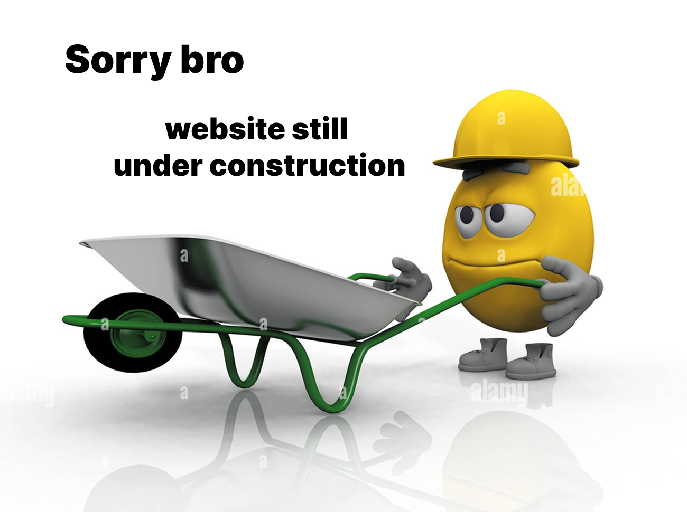

Besoin d'un coup
de main ?
Ménage, désencombrement, montage de meubles, jardinage… On s'occupe de tout, à votre rythme et à votre budget.
À propos
Vous avez mieux à faire que de gérer les corvées du quotidien. HomeService intervient chez vous à Bruxelles pour tous vos besoins, on s'occupe de ce que vous n'avez pas le temps de faire, pour que vous puissiez vous concentrer sur ce qui compte vraiment.

-
5 services réunis Plus besoin de chercher plusieurs prestataires, on s'occupe de tout.
-
19 communes desservies Nous intervenons partout dans la région bruxelloise.
-
24 h pour recevoir votre devis Réponse rapide garantie dès votre première demande.
